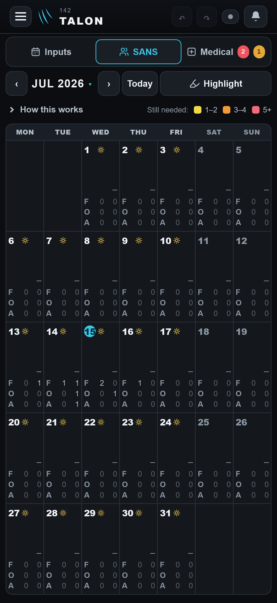
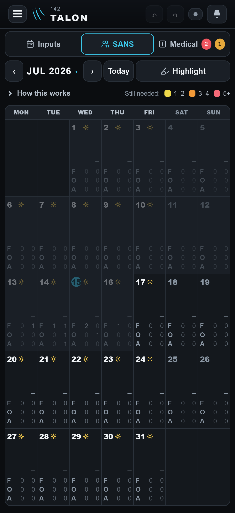
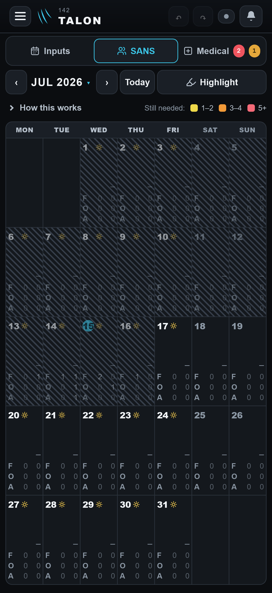
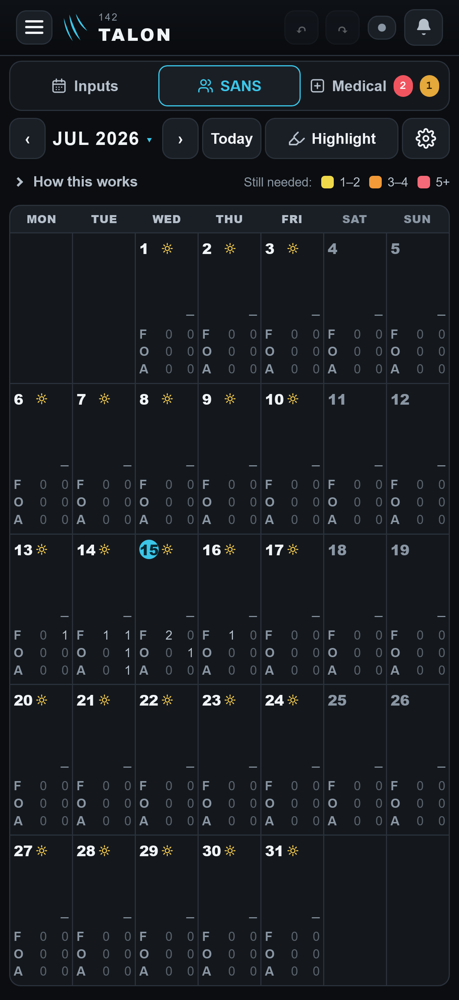
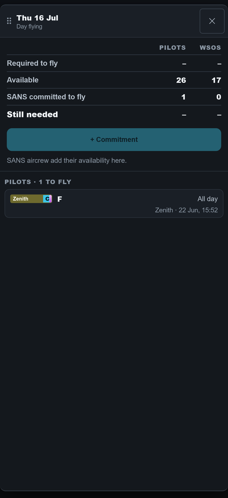
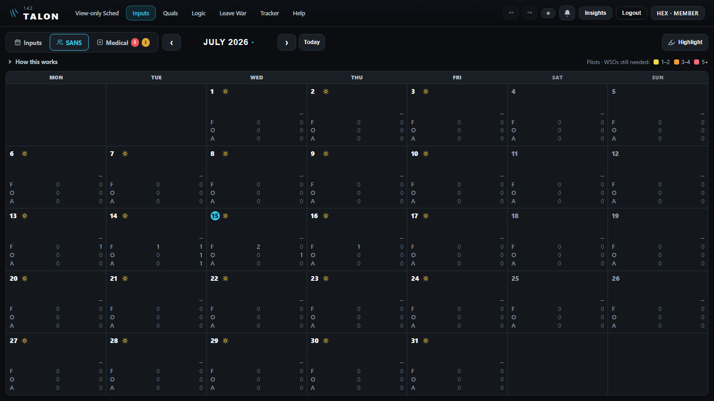
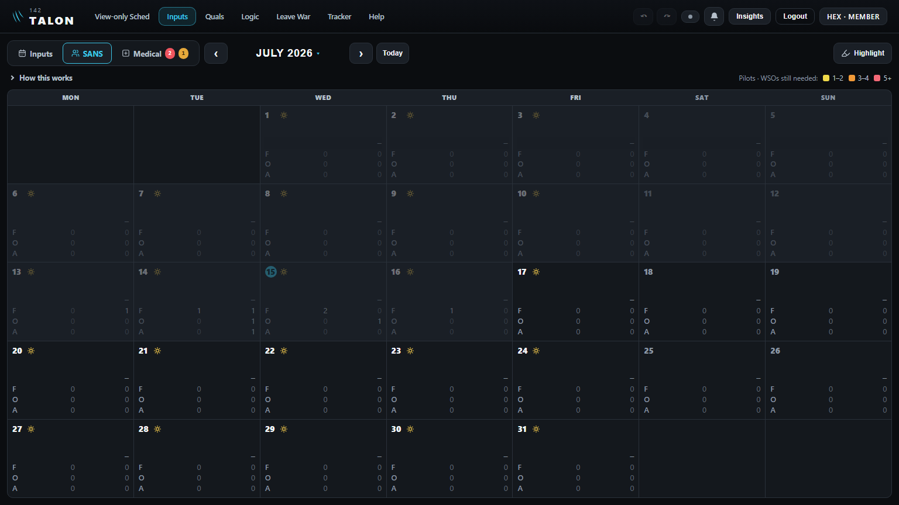
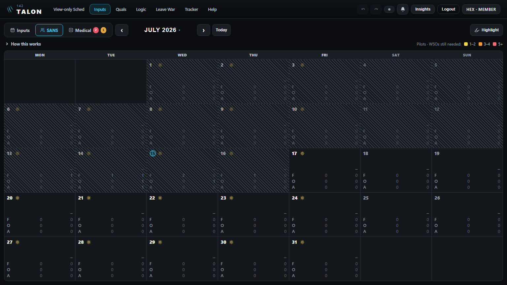
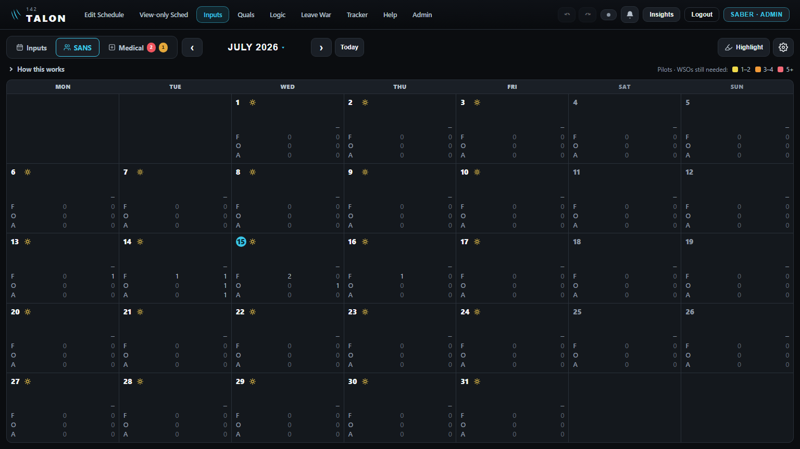
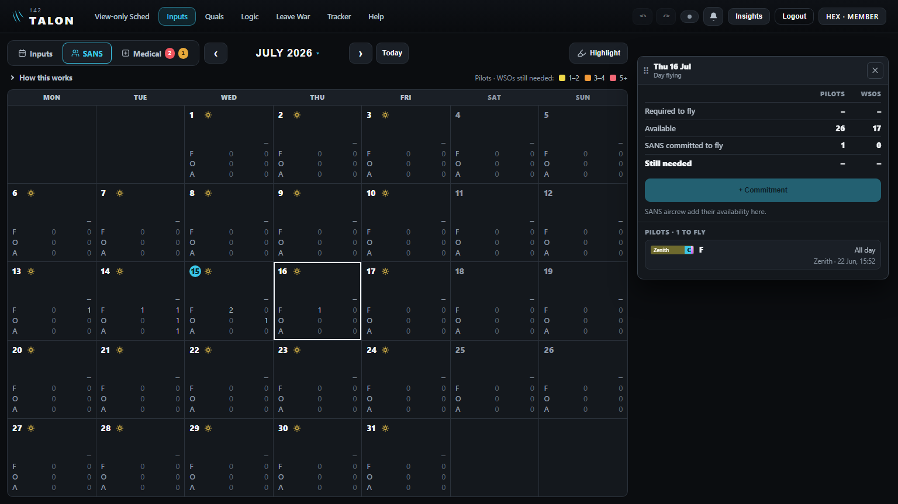

<title>SANS Days Before His Date</title>
<meta name="claude:viewport-fit-sides" content="cover">
<style>
/* layout: one column of question, then picture pairs — today beside proposed, phone and desktop */
:root{--bg:#f4f6f8;--fg:#141a21;--mute:#5b6673;--line:#d5dbe2;--card:#ffffff;--accent:#1f8fb8;
  --f-head:"Space Grotesk",system-ui,sans-serif;--f-body:Inter,system-ui,sans-serif}
@media (prefers-color-scheme: dark){:root:not([data-theme="light"]){--bg:#0d1116;--fg:#e8edf2;--mute:#9aa6b3;--line:#27313c;--card:#151b22;--accent:#3cc2ea;color-scheme:dark}}
:root[data-theme="dark"]{--bg:#0d1116;--fg:#e8edf2;--mute:#9aa6b3;--line:#27313c;--card:#151b22;--accent:#3cc2ea;color-scheme:dark}
body{background:var(--bg);color:var(--fg);font-family:var(--f-body);line-height:1.5;
  padding-left:max(16px,env(safe-area-inset-left,0px));padding-right:max(16px,env(safe-area-inset-right,0px));padding-block:24px 48px}
main{max-width:1100px;margin:0 auto;display:grid;gap:28px}
h1,h2{font-family:var(--f-head);text-wrap:balance;margin:0}
h1{font-size:1.6rem}
h2{font-size:1.15rem}
p{margin:0;max-width:68ch}
.ask{background:var(--card);border:1px solid var(--line);border-radius:10px;padding:16px;display:grid;gap:8px}
.ask b{color:var(--accent)}
.note{color:var(--mute);font-size:.92rem}
.row{display:grid;grid-template-columns:repeat(auto-fit,minmax(240px,1fr));gap:16px}
.row.wide{grid-template-columns:1fr}
figure{margin:0;display:grid;gap:6px;min-width:0}
figure img{width:100%;height:auto;border:1px solid var(--line);border-radius:8px;display:block}
figcaption{font-size:.9rem;color:var(--mute)}
figcaption b{color:var(--fg)}
a{color:var(--accent)}
section{display:grid;gap:12px}
</style>
<link rel="stylesheet" href="https://fonts.googleapis.com/css2?family=Inter:wght@400;600&family=Space+Grotesk:wght@600&display=swap">
<main>
  <h1>Shading Hex's days before his SANS date</h1>

  <div class="ask">
    <p><b>Your one question:</b> which shading do you want on the SANS calendar for the days a man can't commit for yet? <b>Recommended: A, faded</b> — picture 2 (phone) and 7 (desktop).</p>
    <p class="note">The example: today is Wed 15 Jul. The admin has posted Hex out as SANS from Fri 17 Jul; it hasn't run yet. Hex opens Inputs → SANS. He can commit for Fri 17 onwards, not before.</p>
    <p class="note">Why A: it reads as "not for you yet" and keeps every figure readable. B's stripes are the Leave War's posting-out stripes, which there mean "after he left, not counted" — reusing them here would give one look two meanings.</p>
  </div>

  <section>
    <h2>What stays the same either way</h2>
    <p class="note">Only Hex sees the shading, and only while his SANS date is still ahead; from Fri 17 it is gone. The admin's calendar is unchanged (pictures 4 and 9). A shaded day still opens when tapped, as today: the figures and other people's commitments show, and "+ Commitment" stays greyed for him (pictures 5 and 10).</p>
  </section>

  <section>
    <h2>On your iPhone (402 wide)</h2>
    <div class="row">
      <figure><a href="img/phone-1-today.png"></a><figcaption><b>1 · Today</b> (real). Nothing tells Hex which days he can't commit for.</figcaption></figure>
      <figure><a href="img/phone-2-proposed-A-faded.png"></a><figcaption><b>2 · A, faded</b> (drawn in). 1–16 Jul faded; 17 Jul on as normal. Recommended.</figcaption></figure>
      <figure><a href="img/phone-3-proposed-B-striped.png"></a><figcaption><b>3 · B, striped</b> (drawn in). The same days with diagonal stripes.</figcaption></figure>
    </div>
    <div class="row">
      <figure><a href="img/phone-4-admin-unchanged.png"></a><figcaption><b>4 · The admin's view</b> (real). No shading — it is Hex's own.</figcaption></figure>
      <figure><a href="img/phone-5-today-thu16-opened.png"></a><figcaption><b>5 · Hex taps Thu 16</b> (real, today). "+ Commitment" is greyed for him already.</figcaption></figure>
    </div>
  </section>

  <section>
    <h2>On a desktop (1536 wide)</h2>
    <div class="row wide">
      <figure><a href="img/desktop-1-today.png"></a><figcaption><b>6 · Today</b> (real).</figcaption></figure>
      <figure><a href="img/desktop-2-proposed-A-faded.png"></a><figcaption><b>7 · A, faded</b> (drawn in). Recommended.</figcaption></figure>
      <figure><a href="img/desktop-3-proposed-B-striped.png"></a><figcaption><b>8 · B, striped</b> (drawn in).</figcaption></figure>
      <figure><a href="img/desktop-4-admin-unchanged.png"></a><figcaption><b>9 · The admin's view</b> (real), unchanged.</figcaption></figure>
      <figure><a href="img/desktop-5-today-thu16-opened.png"></a><figcaption><b>10 · Hex opens Thu 16</b> (real, today).</figcaption></figure>
    </div>
  </section>

  <p class="note">"Real" pictures are the app as built today, signed in as Hex (or the admin). "Drawn in" pictures are the same screen with only the shading added; nothing else moves. Tap any picture to open it full size.</p>
</main>
